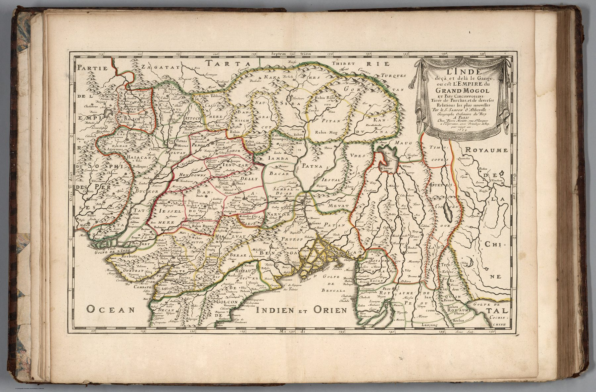

← Baroque Mughals and Companies

The French school
Nicolas Sanson, geographer to the French crown, helped establish the restrained style associated with seventeenth-century French cartography. Compared with many Dutch atlas sheets, the emphasis falls less on pictorial abundance and more on hierarchy, names and political division.
Two organising systems
The title preserves the Ptolemaic distinction between India on this side and beyond the Ganges. At the same time, it identifies the region with the Empire of the Great Mogul. Ancient spatial vocabulary and contemporary dynastic power occupy the same frame.
A political India seen from Paris
The Mughal Empire gives European readers a single intelligible centre around which the subcontinent can be organised. Yet the map remains a work of distant compilation. It translates a complex and internally differentiated political landscape into the categories of European court geography.
The gaze
Sanson worked for a king, and he drew India for one. The Great Mogul stands in the title as a fellow monarch whose realm can be listed beside the other monarchies of the world, bounded and named like theirs. The sea route that organised earlier sheets drops out of view; what remains is a state.